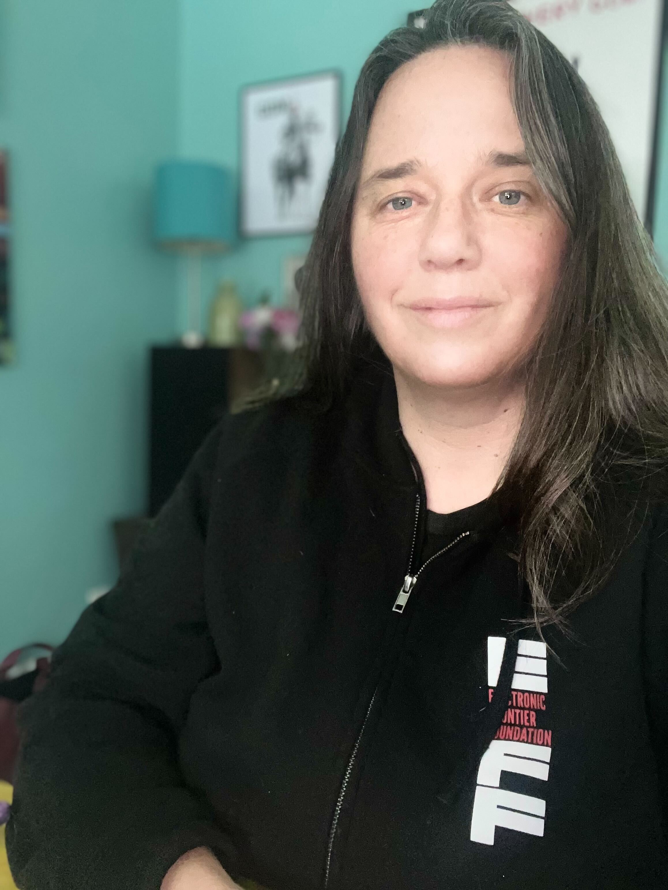

Halifax BSides
Halifax BSides is a non-profit organization run by members of the Halifax Technology and Information Security industry with a goal of running a yearly conference for experts, students, the curious and the confused not only to hear from others but also to provide them their chance to speak on topics that interest them. We are planning our November 2024 conference and look forward to sharing more with you as soon as possible.
Directors
Brad Call
Experienced Security Professional with a demonstrated history of working in the information security industry. Skilled in Network and Endpoint Security, Infrastructure Design, and Domain Management. Works well as both a leader and a team member. Organized, analytical, innovative, self-sufficient, quick learner, and ethical.Jeff Hann
Jeff has over six years of experience in Information Security as an Application Security Engineer. He is the Engineering Lead of a Security Engagement program for a Fortune 1000 medical device manufacturer. Before entering security, Jeff worked as a developer for a decade.Mary MacDonald
I am currently with the Province of Nova Scotia as an IT Procurement Specialist within the Cyber Security & Digital Solutions team. I have graduated from NSCC I.T. Campus specializing in the Database Administration (DBA) Stream in June 2018. My passion lies in Cyber Security, Configuration and in Database Development using Oracle and MySQL Programming and Database Management Systems (DBMS). I am married and live in the Halifax Regional Municipality.Jonathan Elliott
Cybersecurity student and former kindergarten teacher who loves learning new things and sharing along the way. Love of tech first established as a youngster enthralled by the mind-blowing speed of Sonic being used as a very effective distraction by my parents. Excited to meet fellow tech-heads and learn from all the awesome things people in the community are doing. 
Meaghan Shubaly
Meaghan Shubaly is a seasoned professional with nearly 25 years of experience in the software industry, specializing in cybersecurity for the past 7 years. They are deeply passionate about enhancing cybersecurity measures to protect both individuals and communities.Mark Leblanc
Haligonian infosec nerd - let's talk DevSecOps, AppSec, bug bounties, CTFs, and anything Apple.Previously an IT student at NSCC.
Slinging fancy cocktails in what seems like another lifetime ago.